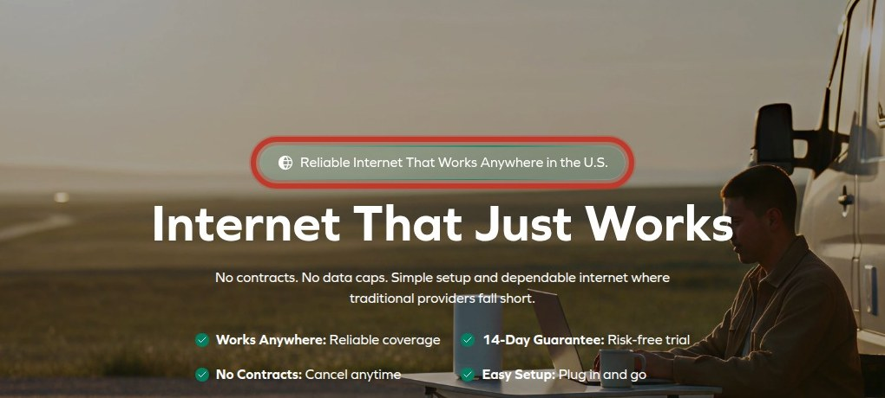
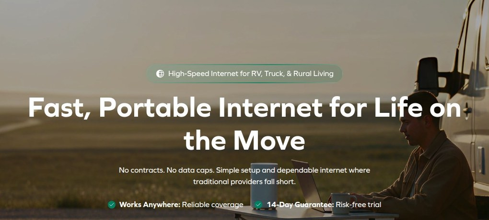
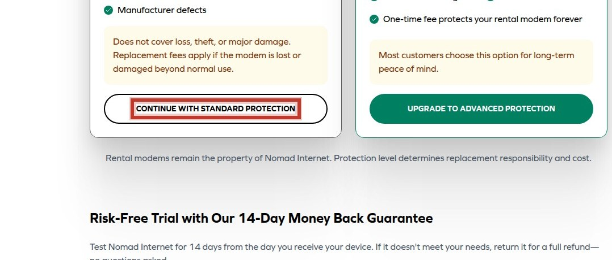
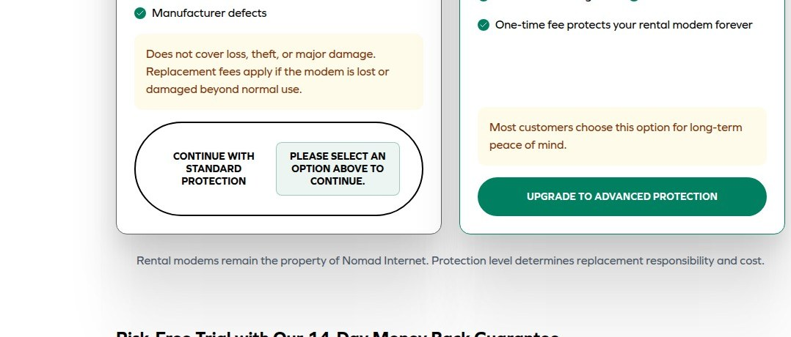
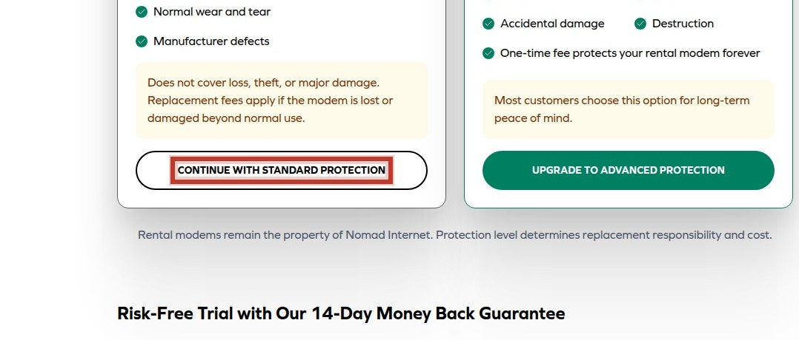
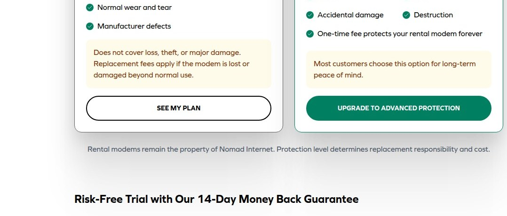
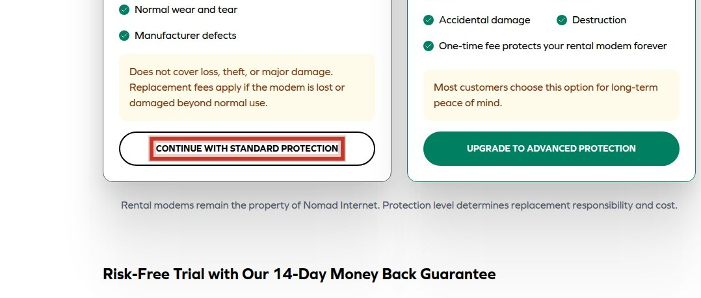
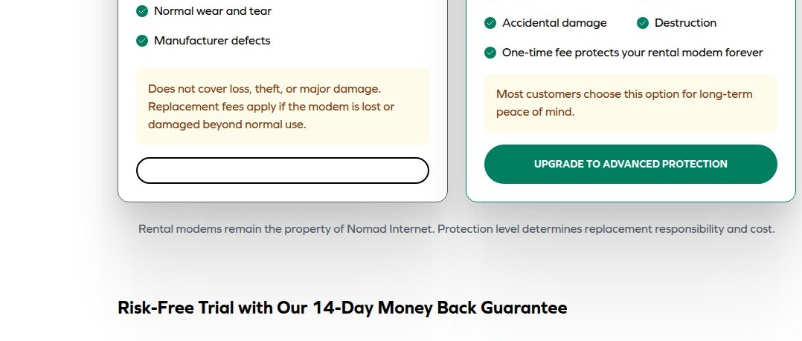
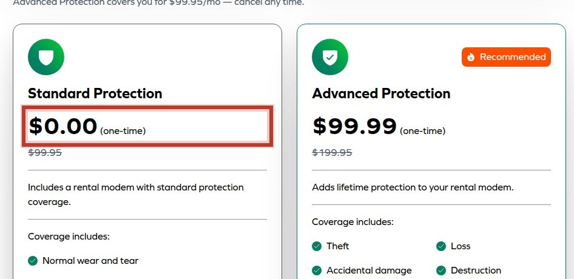
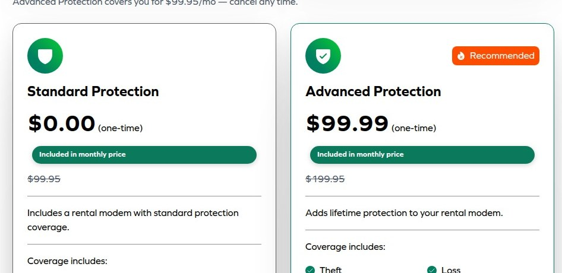

Value proposition is generic
The hero headline promises reliability but fails to explain what the product is or why it's better, lacking visitor-centric benefit.


Unclear form field labels
Form fields lack explicit labels, so visitors don't know what data is required before engaging.


Ambiguous form submit label
The CONTINUE button label does not set expectations for the next step, adding cognitive effort at conversion.

Pricing & Plans
Choose your plan
Pro
$99.95 /month
Everything you need to scale.
Business
$129.95 /month
Advanced features for teams.
Enterprise
$99.95 /month
Custom solutions.
Get StartedDuplicate pricing creates comparison ambiguity
The same plan prices appear twice with different formatting, causing ambiguity about which price applies to which tier.


Repeated identical form instances
Two identical CONTINUE forms on each page create confusion about which to complete, increasing abandonment.


One-time costs appear separately
One-time charges are listed separately from monthly prices, causing visitors to overlook them until later.